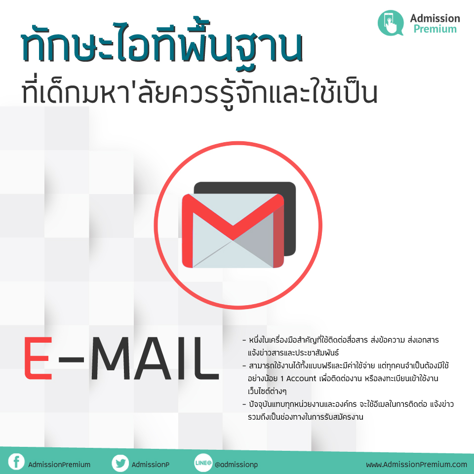

น้องๆ หลายคนคงรู้จักและเคยใช้โปรแกรมที่เกี่ยวกับไอทีบนคอมพิวเตอร์กันมาบ้าง แต่บทความนี้พี่ๆ Admission Premium จะขอมาแนะนำ 9 โปรแกรมพื้นฐานเพิ่มทักษะด้านไอที ที่เด็กมหาลัยหรือบัณฑิตจบใหม่ควรรู้และใช้งานเป็น เพื่อเน้นย้ำว่าก่อนจะออกไปสู่โลกการทำงานบางโปรแกรมจะช่วยสร้างความได้เปรียบ เพิ่มเงินเดือน และสร้างรายได้เสริมให้ด้วยนะ จะมีโปรแกรมอะไรบ้าง ตามมาดูกันได้เลย

1. Microsoft Word
Microsoft Word เป็นโปรมแกรมสร้างงานเอกสารยอดนิยมที่น้องๆ หลายคนต้องเคยใช้ หรืออย่างน้อยก็ต้องเคยรู้จักมาบ้าง ซึ่งถือว่าโปรแกรมนี้เป็นพื้นฐานในการทำงานเอกสาร ที่นอกจากจะใช้พิมพ์เอกสารที่จำเป็นสำหรับการเรียนแล้ว ยังมีฟังก์ชั่นการใช้งานค่อนข้างเยอะเช่น สร้าง ปรับแต่งแก้ไข แชร์ อัปโหลกเอกสาร และ Export ไปใช้งานได้หลาย Format เป็นต้น น้องๆ ควรจะศึกษาเอาไว้ถึงเวลาทำงานจริงจะไม่มีใครคอยมาสอนการใช้งานแต่จะให้ทำงานทันที หากเราใช้เป็นก็จะง่ายต่อการทำงาน

2. Microsoft Excel
โปรแกรมนี้เป็นโปรแกรมที่ใช้สร้างเอกสารที่มีการคำนวณสูตร ซึ่งโปรแกรมมีสูตรการคำนวณไว้เยอะมาก เช่น sum , If , vlookup เป็นต้น ซึ่งสูตรเหล่านี้หากเราใช้งานเป็น ก็จะช่วยประหยัดเวลาในการคำนวณไปค่อนข้างเยอะเลยทีเดียว และใช้จัดทำฐานข้อมูลหรือจัดเก็บข้อมูล , สร้างรายงานสรุปได้หลายรูปแบบ เช่น กราฟรูปภาพ กราฟเส้น กราฟจุด และ กราฟแท่ง เป็นต้น
3. Microsoft Powerpoint
Microsoft Powerpoint เป็นอีกหนึ่งโปรแกรมที่ค่อนข้างสำคัญที่ใช้ในการนำเสนองาน การนำเสนอข้อมูลต่างๆ ใส่ได้ทั้ง ตัวอักษร รูปภาพ เสียง วีดีโอ ภาพเคลื่อนไหว และเอฟเฟคต่างๆ โดยเฉพาะในสายงานบริษัทที่จะทำการเสนองานให้หัวหน้าหรือลูกค้า หากเราใช้งานโปรแกรมนี้เป็นก็จะง่ายต่อการสื่อสารในรายละเอียดต่างๆ ที่เราต้องการจะสื่อให้ทุกคนทราบตรงกับเรา

4. Adobe Photoshop และ Adobe Illustrator
ทั้งสองโปรแกรมนี้เป็นโปรแกรมสายงานภาพ , งานกราฟิกเป็นโปรแกรมที่ใช้ปรับแต่งรูปภาพ สร้างงานออกแบบ แก้ไขงานกราฟิก วาดงานภาพและจัดทำสื่อ แต่โปรแกรมนี้สามารถใช้งานสอดคล้องกับ Microsoft Powerpoint ได้เพื่อจะทำให้งานนำเสนอออกมาดูดีมากขึ้นอีกทั้งสามารถสร้างรายได้ด้วย เช่น ทำงานสายกราฟิกและออกแบบงานภาพ เป็นต้น
5. E-mail
ในสมัยนี้ทุกคนคงมี E-mail ในการใช้งานบนโลกโซเชียลเน็ตเวิร์กอยู่แล้วเป็นหนึ่งในเครื่องมือสำคัญที่ใช้ติดต่อสื่อสาร ส่งข้อความ ส่งเอกสาร แจ้งข่าวสารและประชาสัมพันธ์ สามารถใช้งานได้ทั้งแบบฟรีและมีค่าใช้จ่าย แต่ในการสมัครงานนั้นชื่อ E-mail ของเราควรเป็นทางการมากขึ้นเพื่อแสดงความนับถือต่อองค์กรและเพิ่มภาพลักษณ์ให้แก่เรา